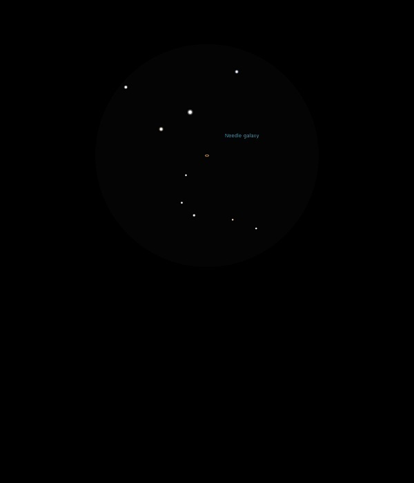

NGC 4565

Spiral Galaxy in Coma Berenices
NGC 4565
Mag 10.4
The Needle Galaxy. Caldwell 38
19/04/15
Really neat!
A well defined edge-on Spiral Galaxy, easy to see why it is called The Needle Galaxy
Bright and sharp in 12mm FOV